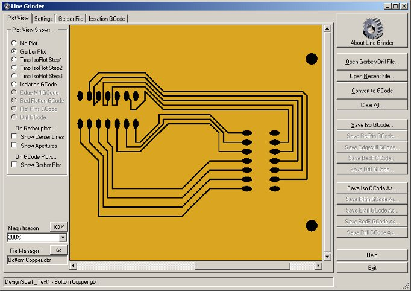
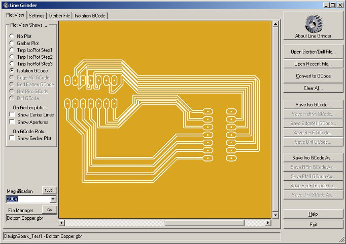

Line Grinder
Gerber Plot to Isolation Milling GCode Software
Main Form and Plot Viewer

The Line Grinder Main Form and a Gerber Plot before Conversion to Isolation GCode
The Main Form
The Line Grinder software design is intended to simplify the complex operations involved in the creation Isolation GCode. It presents the available options and tools on tabs rather than exposing them via menus - thus making all available functionality readily available. This is something of an unconventional design - hopefully it will prove to be easy and intuitive to use once you get used to it.
The Vertical Buttons on the Right
The vertical column of buttons on the right hand side of the provide the major operations for the Line Grinder software. These are the buttons you press to open a Gerber or Excellon file, to convert it and to save the output back to disk. If the button is grey - it means the specified operation is not possible. For example, in the above image it is not possible to save any of the GCode - this is because none has been generated yet. Note that the Convert to GCode button has been activated - this tells you that the conversion is ready to be performed should you wish to do so.
The Tabs on the Left
The tabs on the left hand side of the main Line Grinder form provide a view of the current state of the Line Grinder software and its inputs and outputs. The Line Grinder software creates a new tab for each entity opened or created. For example, when you first start the Line Grinder software only the Plot View and Settings tab will be visible. In the image above, an additional tab entitled Gerber File can be seen. This new tab has been generated because a Gerber file has been opened and its contents will show the text of the current Gerber file. In the image below, two new tabs have been created. These have been generated to hold the GCode output. In this case, the GCode for Isolation Cuts and Reference Pins has been generated from the supplied Gerber file.

A Graphical Plot of the Calculated Isolation GCode
The Plot View Tab
The Plot View tab displays the contents of the currently open Gerber or the contents of the newly generated GCode files. It is quite useful to have a visual representation of the operations which will be applied to the PCB before they are actually run. In particular, note the discussion regarding the correct setting of the IsoCutWidth parameter in the File Managers on the Settings tab.
Since most blank PCB boards are copper, the Plot View display simulates by showing an orange-yellow color. All plots are drawn on this background in order to better correlate the screen display with the resulting physical output.
After a Gerber file is opened, it is possible to view the contents by pressing the options visible at the top left of the Plot View. The resulting output can be scaled and scrolled using the tools on the bottom left hand side. If a view is inappropriate (perhaps because no content is available to display in that mode) it will be greyed out and disabled. Other views are possible if GCode has been generated. The available view modes are:
- No Plot
- The default state - just shows a blank screen
- Gerber Plot
- The contents of the open Gerber file are plotted on the screen. The traces and pads are drawn in black - these represent the copper which would remain if the board were produced by etching away the unwanted copper.
- Tmp IsoPlot Step1
- A temporary plot representing the first step in the Gerber to GCode conversion algorithm. It is not necessary to generate this plot for inspection purposes (it can take some time) and has only been left in place for debugging purposes. For the curious, in this view the blue color represents areas of the plot used by only one object, the green color represents areas of the plot used by two or more objects and the red color represent pixels on the edges of objects. All objects have half the IsoCutWidth File M value added onto each dimension.
- Tmp IsoPlot Step2
- A temporary plot representing the second step in the Gerber to GCode conversion algorithm. It is not necessary to generate this plot for inspection purposes (it can take some time) and has only been left in place for debugging purposes. This view shows the plot after the conversion algorithm has done a bit of work. The blue color is the resolved plot entities, the red color displays single usage edge pixels and the white color shows the edge pixels shared by multiple entities.
- Tmp IsoPlot Step3
- The last temporary plot represents the third step in the Gerber to GCode conversion algorithm. It is not necessary to generate this plot for inspection purposes (it can take some time) and has only been left in place for debugging purposes. This view shows the a white single pixel wide "outline". This line represents actual path the center of the milling bit will take. If you layer the Gerber plot onto this view (by activating the Show Gerber Plot on GCode Plots option) you will see that the white line surrounds the Gerber plot objects by one half the IsoCutWidth value.
- Isolation GCode
- This plot represents the milled path of the Isolation GCode as a white band around the Gerber plot entities. This plot should be carefully inspected to ensure the Isolation GCode generating algorithm has produced accurate paths and has not routed around objects which should be electrically isolated because the IsoCutWidth setting is too large. This view shows the a white single pixel wide "outline". If you layer the Gerber plot onto this view (by activating the Show Gerber Plot on GCode Plots option) you will see how the white band, representing the isolation cut path, surrounds the Gerber plot objects. Isolation GCode is generated from the Gerber file which contains the top or bottom copper layers.
- Edge Mill GCode
- Edge Milling GCode is used to cut the PCB board out of a larger blank board. This plot shows the exact path which the cutting bit will take. If the Gerber plot is layered on top of this display, it will be possible to see that the cutting path runs around the outside of the edge of the board. Edge Milling GCode is generated from the Gerber file which contains the board outline.
- Bed Flattening GCode
- Usually the PCB is mounted on a throw-away piece of wood mounted on the actual bed of the CNC mill. This is done so that the drilling and edge milling operations (which must necessarily exit through the bottom of the board) do not damage the actual mill surface. Bed Flattening GCode is used to flatten the area of the sacrificial wood base so that it is true and square to the toolhead. Bed Flattening GCode is generated from the Gerber file which contains the board outline.
- Reference Pin GCode
- In order to ensure the pads on the top and bottom copper layers are aligned, the Line Grinder software uses the concept of Reference Pins. These are holes drilled through the PCB into a throw-away piece of wood mounted on the actual bed of the CNC mill. When the board is due to be flipped to perform isolation cutting operations on the other side, physical pins (usually short segments of old milling bits) can be inserted into these holes to position the PCB so that the top and bottom layers align. Reference Pin GCode is generated from the Gerber file which contains the top or bottom copper layers.
- Drilling GCode
- Most PCB's have numerous holes which must be drilled to mount chips, and other hardware. This GCode file is designed to perform the drilling operations so that it need not be done manually. Drilling GCode is generated from the Excellon drill files.
Special Display Options
- On Gerber Plots... Show Center Lines
- An optional display flag which draws a line down the center of all Gerber plot items on the display. This was used mostly for debugging and has been left in because it is sometimes useful to see it for alignment purposes.
- On Gerber Plots... Show Apertures
- Another optional display flag mostly left in for debugging purposes. This option draws the Gerber aperture flashes in a different color on Gerber plots.
- On GCode Plots... Show Gerber Plot
- This is an extremely useful option since it allows you to see the Gerber plot overlaid on top of the GCode plot. This clarifies the view and shows you exactly why the isolation cut lines run the way they do. This option can be enabled if any GCode plot is visible.